静态链（static chain）
发生错误
抱歉，产能不足，还没写完。
有一些使用词法作用域的语言支持过程的嵌套。在python或者javascript中就有很多这样的使用，不过在这两个语言当中函数是一等对象，所以可以被传递，同时也能够被从一个函数中当做返回值返回，因此，它们的嵌套函数不得不实现为一个闭包，而对于另外一些不支持函数作为一类对象的语言来说（好像是fortran，我也没遇到过），可以使用另外一种方式来实现内层过程对于外层过程的访问，它们的实现有这样一个性质：外层一定的栈帧一定在栈上，只要有办法能够对栈进行遍历就可以访问到外层的变量。
假设有如下代码：
1 | function main(){ |
在每个栈帧中，每个本地变量相对于frame base是不变的，所以可以通过frame base访问本地变量，所以如果能够获取到外层（词法作用域外层）的frame base，那么就可以访问外层的变量，在执行了代码1第9行后，可以连成这样一个链条：

这种链条称作static chain，其实我第一次看到这个概念是在虎书[1]上，只是当时没有怎么看明白……所以这里再看一遍，而单个边被称为static link。和动态链（dynamic chain）的区别在于，C的static link直接指向了A的栈帧，而没有指向E的栈帧，而A是C的词法作用域的外层，这就是为什么被称作static link。其实动态链就是指向前一个栈帧，和词法作用域无关，在x86里面体现为在prologue保存rbp，在epilogue中恢复前一个rbp，通过rbp就可以不断向前遍历，这种方式对于实现栈遍历非常有用，不过栈遍历实际上更加复杂，具体内容可以参照另外一篇文章。
如果D需要访问最外层的变量a，那么只需要沿着static link，从D->C->A->main即可。
限制
由于要求词法作用域外层的栈帧一定要存在，所以不可以将函数作为返回值，如果将内层的函数返回，那么外层作用域的栈帧已经被弹出了，所以是无效的。因此通过static chain来访问外层变量实际上并不能够实现类似于闭包的操作，具体如何实现闭包可以参考另外一篇文章。
实现
所以该如何实现static chain？以及具体如何通过static chain来访问外层变量？在汇编层面如何体现？
作为参数
注意一下，以下内容是我自己编的，没有什么参考，所以不一定对，但是我感觉没什么问题？？
虽然不可以作为返回值但是却可以作为参数，也就是说可以实现代码1第10行中的那种，但是这样有一个问题，就是之前的实现方式有问题，图2应该可以说明这个问题，按照之前的算法，在B执行的时候无法获取D的static link，因为它本身的static link指向的是main。

所以应该在将D作为参数之前就获取D的static link，然后和函数指针一起传递给B，在
那么为什么在上面也这样做呢？
因为，这样会产生鸡生蛋蛋生鸡的问题。
display
由于需要沿着static chain往上遍历，这样会带来性能问题，因此有一种方式。
引用
[1] Modern Compiler Implementation in C
[2] Principles of Programming Languages -- Lecture 06
[3] sd @@ 补上知乎那个。